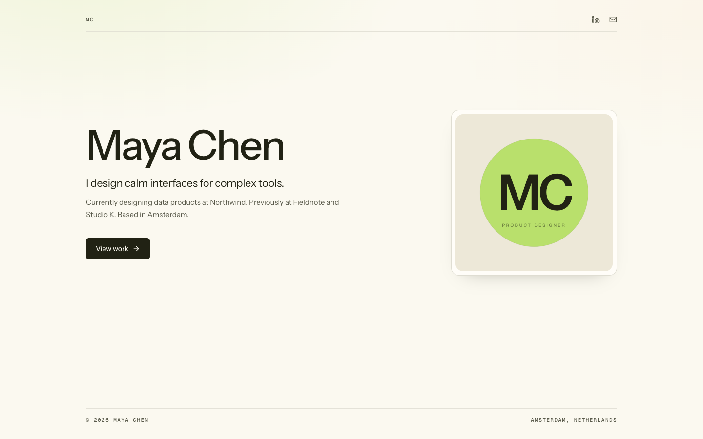

dev-portfolio
Your agent builds your
portfolio.
CV, LinkedIn, and GitHub in.
A minimal personal site out.
One YAML
Next.js 16
Agent-ready
github.com/umutyesildal/dev-portfolio
dev-portfolio-designer.vercel.app

Sample profile · Maya Chen